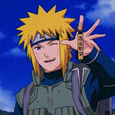

RESUME
DETAILS:

Name: Minato Namikaze
Date of Birth: January 25, 1947
Place of Birth : Konohagakure (Hidden Leaf Village)
Nationality: Konohagakure Ninja
Rank : Fourth Hokage
Languages: Fluent in Japanese , proficient in ninja code
Interests : Personal growth , exploring new Techniques
SUMMARY:
The Fourth Hokage of Konohagakure, was a legendary ninja known for his unmatched speed, intelligence, and selfless sacrifice to protect his village. He created the Rasengan and sealed the Nine-Tails inside his son, Naruto, ensuring the village's survival. He mentored many ninjas, including his own students and the legendary Team 7 (composed of Naruto, Sasuke, and Sakura), through his influence
EDUACATION:
Konoha Ninja Academy
Graduated Age:12
- Graduated with distinction, showcasing superior skills in various ninjutsu disciplines.
- Showcased exceptional skills combat skills using ninja tools.
- Developed adaquate & exceptional rapid movements.
Self-Taught Mastery
pecialized in sealing jutsu and space-time ninjutsu, developing groundbreaking techniques that would define future generations of ninjas.
- Developed a deep understanding of advanced sealing jutsu, one of the most proficient sealing masters
- bility to use the Flying Thunder God Technique (Hiraishin no Jutsu), which allowed him to teleport instantly
WORK EXPERIENCE:
Jonin (Elite Ninja)
Konohagakure (Hidden Leaf Village)
- Led high-level missions and covert operations for Konohagakure
- Developed and perfected advanced ninjutsu techniques , the Flying Thunder God Technique
Leader of the Fourth Hokage’s Era Defense & Development
Konohagakure (Hidden Leaf Village)
- Played a vital role in the safety of Konohagakure by personally confronting external threats
- Created the Rasengan, a powerful ninjutsu technique that became a legacy
- Initiated numerous projects to bolster the Hidden Leaf Village’s resources & stability.
Leader of the ANBU Black Ops (Special Forces Division):
Konohagakure, Fire Country
- Led elite missions that required tactical planning, execution of covert operations
- Oversaw the gathering of sensitive information, providing critical insights for village security and defense strategies.
Hokage of Konohagakure (The Hidden Leaf Village):
Konohagakure, Fire Country
- Effectively handled multiple high-pressure situations, including natural disasters.
- Fostered alliances with other villages, maintaining peace and ensuring the village’s long-term security.
SKILLS:
- - Sealing Jutsu Mastery:
- Expert in creating powerful seals and traps, especially for containing dangerous entities like the Nine-Tails.
- * Space-time Ninjustsu:
- Proficient in Flying Thunder God Technique (Hiraishin no Jutsu) for instantaneous teleportation.
- - Ninjutsu & Combat Mastery:
- Creator of the Rasengan; advanced knowledge of offensive, defensive, and healing jutsu.
- * Leadership & Strategy:
- Effective leader with strong decision-making skills, crisis management, and tactical expertise.
- - Mentorship & Training:
- Passionate about developing young ninjas, particularly through leadership and teamwork.
- * Self-Sacrifice for the Greater Good:
- Demonstrated unmatched selflessness when he sealed the Nine-Tails inside his son, knowing that it would risk his life but ensure the village's safety and the future of Konohagakure.
Awards,Certifications and Achievements:
-
Title of “Yellow Flash”: Awarded for his extraordinary speed, mastery of the Flying Thunder God Technique
-
Creator of the Rasengan: Developed the Rasengan, a groundbreaking ninjutsu technique that became one of his signature moves
-
Sealing Jutsu Mastery: Created this advanced sealing technique to contain the Nine-Tails (Kurama)
-
Fourth Hokage: Title earned through his outstanding contributions, leadership, and dedication to the village
-
Strategic Leadership in War & Crisis: Known for his brilliant tactical mind during the Third Great Ninja War, where his leadership prevail